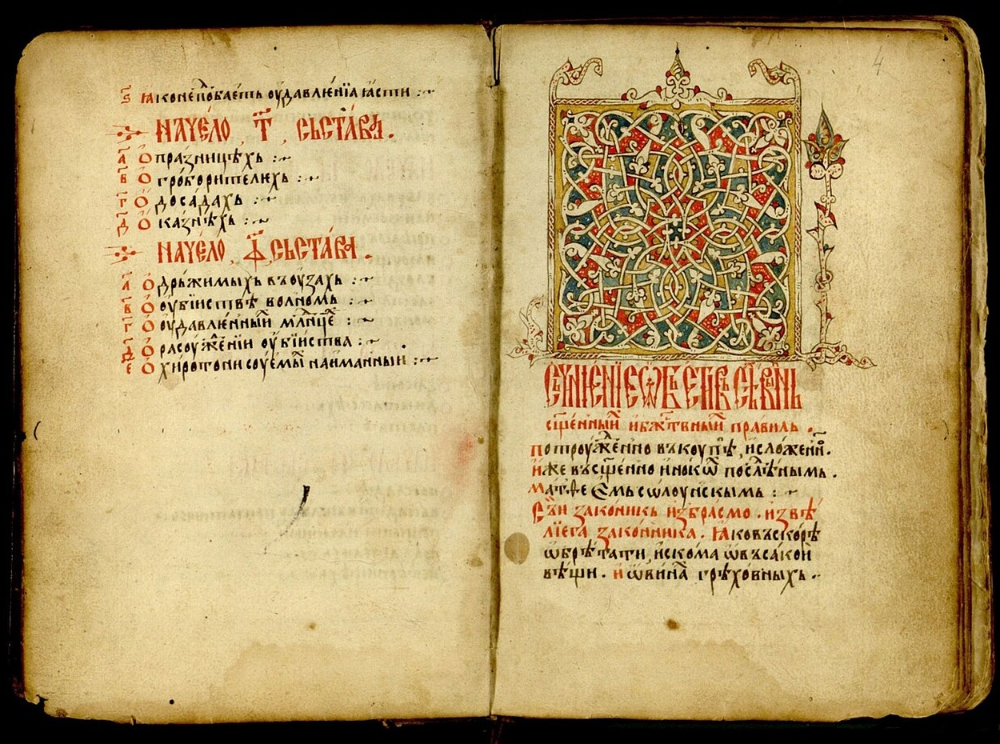

Tsar Dušan the Mighty

Fresco of Tsar Dušan, Lesnovo Monastery
Introduction
Tsar Stefan Dušan Nemanjić, known as Dušan the Mighty, was the most powerful Serbian ruler and one of the most significant figures in medieval Southeastern Europe. He was born around 1308, the son of King Stefan Dečanski and Queen Teodora. From an early age, he showed exceptional leadership, military talent, and strategic thinking. In 1331, after a political conflict with his father, he seized the throne and was crowned king in Skopje.
Reign
During his reign, Dušan launched numerous successful military campaigns, expanding the Serbian state deep into Byzantine territory. He conquered Epirus, Thessaly, large parts of Macedonia and Thrace. His empire became the largest in medieval Serbian history. He was crowned Emperor of the Serbs and Greeks on Easter Sunday, April 16, 1346, in Skopje, with the blessing of the Serbian Patriarch, the Bulgarian Patriarch, and representatives of Mount Athos.

Map of Dušan's Empire
Dušan's Code
In 1349, in Skopje, Dušan enacted the first part of his legal code, with a second part added in Serres in 1354. The Dušan’s Code consisted of over 200 articles and regulated civil, ecclesiastical, and legal matters. It was one of the most advanced legal systems of its time in Europe. Dušan emphasized justice and order, imposing strict punishments for corruption, theft, and treason.
Page from Dušan's Code, 14th century
Endowments
Tsar Dušan was a generous benefactor. His most famous foundation is the Monastery of the Holy Archangels near Prizren, built near the imperial residence. It combined architectural splendor with spiritual significance and served as his burial site. He also supported the restoration and expansion of monasteries in Serbia and Greek lands, including on Mount Athos.

Monastery of the Holy Archangels, canyon of the Prizren Bistrica River in Metohija
Hilandar and Orthodoxy
Dušan was a staunch protector of Eastern Orthodoxy. He supported monastic life and strengthened the independence of the Serbian Church. In 1346, he elevated the Serbian Archbishopric to the Patriarchate of Peć. He generously donated gold, land, and vineyards to the Hilandar Monastery and other religious institutions on Mount Athos.
Dušan's Gold Coin
During his reign, the Serbian state minted high-quality gold and silver coins modeled after Byzantine currency. The Dušan's gold coin bore his likeness with an imperial crown and a cross in hand. It symbolized sovereignty, economic strength, and legitimacy and was widely used in Balkan trade and diplomacy.
Legacy
Tsar Dušan died unexpectedly on December 20, 1355, while preparing for a military campaign toward Constantinople. He was buried in the Monastery of the Holy Archangels. He was succeeded by his son Uroš, known as Uroš the Weak, who was unable to preserve the unity of the empire. Dušan’s legacy remains a symbol of Serbian imperial glory, justice, and spiritual depth.

The Serbian Empire in 1360, during the reign of Emperor Uroš, with the territories of regional lords.
Interesting Facts about Tsar Dušan
- Tsar Dušan commanded an army of over 80,000 soldiers, one of the largest in Europe at the time.
- He planned to conquer Constantinople and crown himself Emperor of Byzantium but died suddenly before he could.
- His body was transferred from Prizren in 1927 and now rests in the Church of St. Mark in Belgrade.
- According to folk tradition, he was over 2 meters tall, earning the nickname "the Mighty" for his physical and political power.
- The Dušan’s Code was so advanced that it served as a model of justice for centuries after.
- Tsar Dušan held the title “The Great King of Serbs and Greeks” and proclaimed himself emperor in 1346.
- His palace in Skopje was one of the most impressive medieval castles in the Balkans.
- He founded numerous monasteries and endowments, some of which remain significant cultural monuments today.
- During his reign, the Serbian state was the largest in its history, encompassing parts of modern Serbia, North Macedonia, Greece, and Albania.
- Dušan’s death caused the decline of Serbian power, as his successor lacked the strength to maintain the empire.
- Legend says Dušan was so mighty he even “held the sky in his hands.”
- His legal code was written in Old Serbian and contained over 200 articles, regulating all aspects of life and law.
Last updated: July 2025.